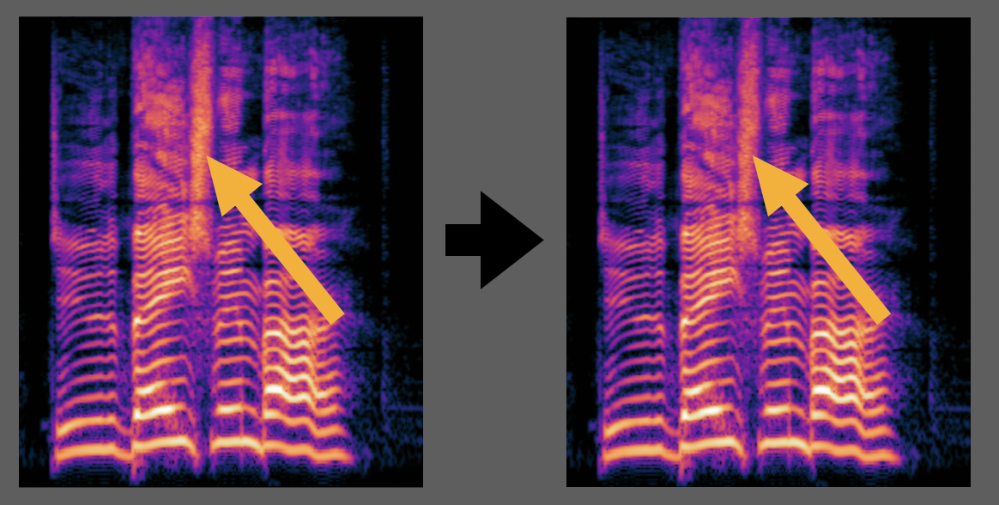

An ML model that reduces harsh "s", "th", or "f" sounds in vocal recordings, trained on synthetic paired data from one vocalist.

Harsh vocal sibilances are an immediate indicator of a low-quality recording or mixing process, and can make an excellent song unbearable to playback on less-than-perfect systems. They most often arise in vocal recordings from poor mic technique or low-quality microphones.
The traditional way to reduce sibilances is the de-esser, which is a narrow-band compressor which indiscriminately attenuates a certain frequency range when its spectral power exceeds a set threshold. While they will reduce sibilances, they also have a tendency toward reducing the intelligibility of the vocal.
Recently, neural approaches to this problem have entered the market, and typically work more precisely than traditional de-essers. However, these plugins are expensive, and moreover I thought it would be a good exercise to try to design my own, with the twist that it is specially trained on one specific vocalist: Emmett McLaughlin, of Emmett and the Dead Ends. Since I frequently engineer his music, I built this project with the intention of creating a specialized tool that would work more effectively than competing options on the market.
Here are some short audio samples I used it on to test. This excerpt is from a track titled "Basement Bar", with vocals recorded on an Aston Origin, on which I applied the model. It may be worth it to use headphones to fully hear the differences.
A second excerpt below, from a track titled "What's Your Name?."
I used this tool on the lead vocal of a recent release: "Dancing Alone."
To begin this project, I needed to first decide what my target sound would be. I chose a set of vocal recordings taken with a Neumann u87, an industry standard microphone, with extremely well-balanced sibilances, which have a desirable target sound.
To create a sibilant dataset, I built a tool which takes these recordings, detects the sibilant moments, and makes a copy where those segments are artificially boosted, imitating what poor recording technique or a bright microphone may do. The settings are randomized for every example, so the model sees many different kinds and intensities of harshness. Some examples are left unchanged on purpose, so the model learns to leave clean audio alone.
The model works on a spectrogram of the audio, which breaks the sound into hundreds of frequency bands measured every few milliseconds. The network is a convolutional neural network (CNN) that slides along this spectrogram in time, using stacked dilated convolutions so that each prediction draws on about a third of a second of audio on either side and judges a sibilant relative to the vowels around it. It turns down the overly loud parts of an “s” and leaves everything else untouched. Because the mask can only turn things down, never add sound, the model will not introduce artifacts or “invent” audio.
The finished tool takes a WAV file of any length, in mono or stereo and at any sample rate, and returns an intelligently de-essed version in the same format.